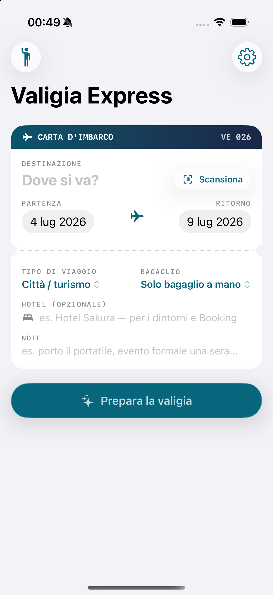
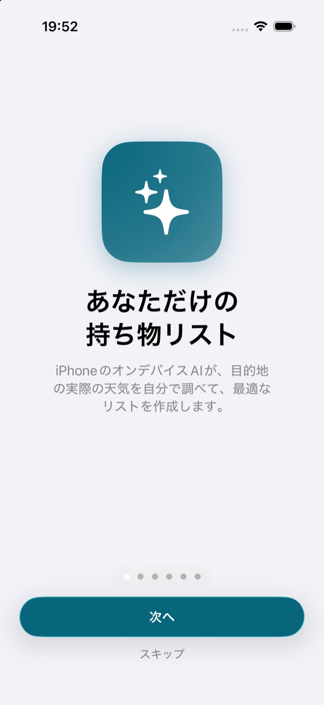

Dici dove vai — o inquadri la carta d'imbarco. Il telefono controlla che tempo farà davvero e prepara la lista giusta: concreta, personale, senza "abbigliamento adeguato".

Questa è una versione ridotta che gira qui nel browser, col meteo vero preso da Open-Meteo — la stessa fonte che usa l'app. Nell'app la lista la scrive l'intelligenza artificiale del telefono, e conosce anche i tuoi gusti.
Scrivi una città e premi Prepara la valigia.
Il meteo arriva davvero, non è finto.
Il modello controlla il meteo da solo e adatta la lista al clima reale della settimana in cui parti. Non alla media stagionale: proprio a quei giorni lì.
Carta d'imbarco, treno o pullman: destinazione e date si compilano da sole. Niente da digitare.
Volo o percorso in auto sulla strada vera. E cerchi con parole tue — "posti nerd", "ramen", "vintage" — trovando i posti giusti.
Conosce le tue date, il meteo e cosa hai già in valigia. Gli chiedi un itinerario o cosa vedere se piove — e se vuoi ti sistema la lista.
I posti dove sei stato si collezionano, come su un passaporto vero. Insieme a gusti e abitudini, che restano solo sul tuo telefono.

Interfaccia e liste in italiano, inglese e giapponese. Anche i testi che scrive l'AI escono nella lingua del telefono.
Non è ancora sugli store: su Android scarichi il file e lo installi, su iPhone serve un passaggio dal computer.
Un tap e ce l'hai. Al primo download Android chiede di autorizzare l'installazione da questa fonte: è normale.
La lista generata arriva con Gemini Nano, che gira solo su Pixel 8+ e Galaxy S24+. Il resto funziona ovunque.
Con l'account sviluppatore gratuito l'app va installata dal computer e va rinnovata ogni 7 giorni.
TestFlight arriverà con l'account sviluppatore a pagamento.
Le stesse novità che trovi nel foglio "Novità" dentro l'app.
Non c'è niente da accettare, niente da tracciare, nessun "continua con Google". Il viaggio resta tra te e il tuo telefono — letteralmente. Anche questo sito non ha cookie né statistiche.